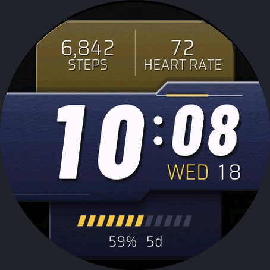
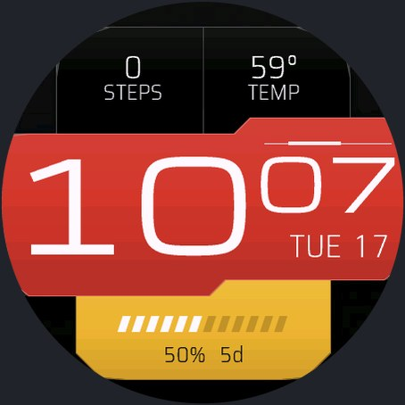
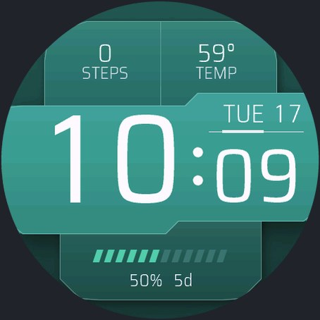
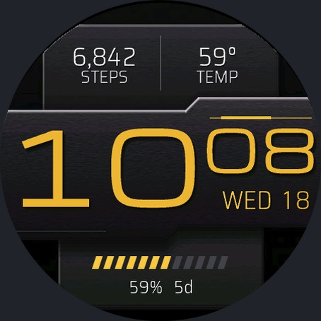
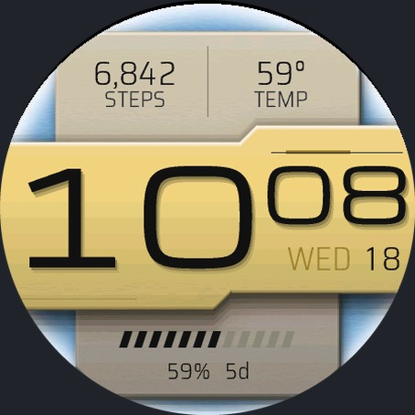
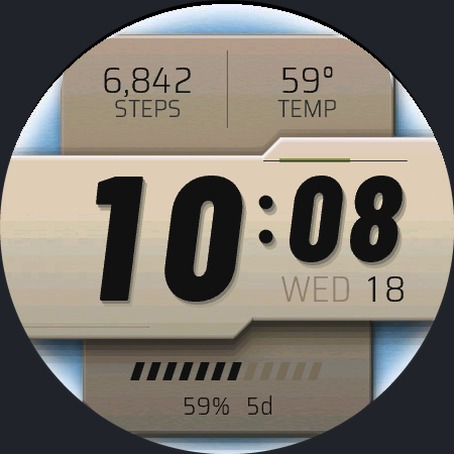
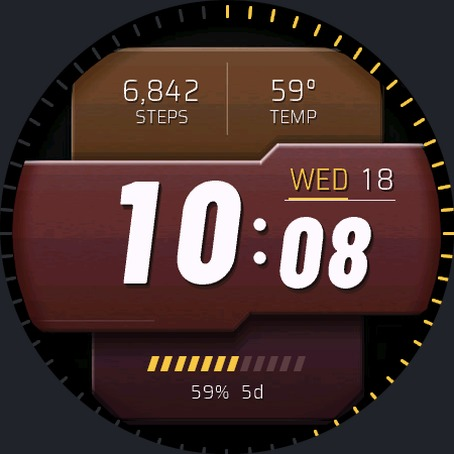
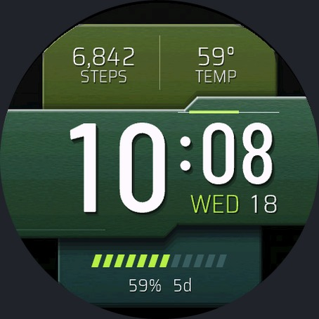

FaceGrabs / Slab Pro / Setup guide
Slab Pro setup guide and build ideas
Every setting explained, then eight looks to copy.
What is Slab Pro and where are its settings?
Slab Pro is a big, clean digital watch face for round AMOLED and color-screen Garmin watches. You decide how it looks.
Every setting lives in the Garmin Connect IQ phone app. Open Connect IQ, go to My Device or Watch Faces, choose Slab Pro, then Settings. On many watches you can also hold the watch face and choose Customize or Edit to change the same settings on the watch itself. The exact wording of that menu depends on your watch model.
What does each setting do?
The settings are listed in the order they appear in the app.
- Finish
- Steel, Ice, Carbon, Bronze or Glass. Steel has a brushed-metal texture and Glass is frosted.
- Background
- The dial behind the cards. Finish color, Match accent color, or one of Blue, Navy, Teal, Green, Lime, Gold, Orange, Red, Maroon, Pink, Purple or Silver. The finish keeps its texture and takes on the color.
- Accent color
- 27 sets in all: 11 solid colors and 16 two-tone pairs. Solid: Cyan, Orange, Green, Red, Gold, Violet, White, Blue, Pink, Lime, Teal. Pairs: Blue + Orange, Blue + Gold, Blue + Red, Blue + Silver, Sky + Blue, Green + Gold, Green + White, Purple + Gold, Purple + Teal, Red + Gold, Red + Silver, Red + White, Maroon + Gold, Teal + Orange, Orange + White, Black + Gold. The accent colors the date, the gauge and the seconds.
- Accent shade
- Auto, Light or Dark. Changes how light or dark the accent color is.
- Time card
- The big tile behind the time. Match theme, Blue, Navy, Teal, Green, Lime, Gold, Orange, Red, Maroon, Pink, Purple, Silver, Black or White.
- Time card text
- Auto, White, Black, or any of Blue, Navy, Teal, Green, Lime, Gold, Orange, Red, Maroon, Pink, Purple, Silver. Auto keeps the dark or white ink the face picks for the card.
- Top left tile, Top right tile, Bottom tile
- Each takes the same choices as the time card: Match theme, Blue, Navy, Teal, Green, Lime, Gold, Orange, Red, Maroon, Pink, Purple, Silver, Black or White. Match theme leaves a tile as the finish draws it. Any other choice paints that tile in the color.
- Top left text, Top right text, Bottom text
- The same text choices as the time card text: Auto, White, Black or any color.
- Top left and Top right fields
- Two data fields, 14 choices each: Steps, Temperature, Heart rate, Resting heart rate, Body Battery, Stress, Sunrise / sunset, Altitude, Floors, Calories, Distance, Active minutes, Recovery time, Battery days.
- Bottom bar
- What the bottom gauge shows: Battery, Step goal, Body Battery or Weekly active minutes.
- Seconds
- Off, Digits or Edge ring.
- Time font
- Five fonts: Wide, Sport, Tall, Clean or Light.
- Gauge style
- Three styles for the bottom gauge: Slanted, Solid or Battery.
How do the tile colors share shades?
When two or more tiles use the same color, Slab Pro shades them a shade or two apart so the layers stay easy to tell apart. The two top tiles are the exception: they may match exactly.
What looks can I build?
Each look below is a real capture of the face on a fenix 8 47mm. Settings not listed stay at their defaults.

Team colors
Pick your two team colors and give each to a pair of tiles. Here: navy and gold.
- Finish: Carbon
- Accent color: Gold
- Top left tile and Top right tile: Gold
- Time card and Bottom tile: Navy
- Text colors: Auto
- Top right field: Heart rate (left stays Steps)
- Time font: Sport

Flag look: black, red, gold
A three-layer flag built from tile colors, not a built-in flag set. Top tiles, time card and bottom tile are the three bands. Swap in any tricolor you like.
- Finish: Carbon
- Accent color: White
- Top left tile and Top right tile: Black
- Time card: Red
- Bottom tile: Gold
- Text colors: Auto
- Fields: Steps and Temperature
- Time font: Wide

Monochrome tonal
Every tile in one color. The tiles shade themselves so the layers still read clearly.
- Finish: Steel
- Background: Teal
- Accent color: Teal
- All four tiles: Teal
- Text colors: Auto
- Fields: Steps and Temperature
- Time font: Clean

Black and Gold
Dark cards with a gold time. Easy to read and easy to wear with anything.
- Finish: Carbon
- Accent color: Black + Gold
- All four tiles: Black
- Time card text: Gold
- Other text: Auto
- Fields: Steps and Temperature
- Time font: Wide

Ice and pink
A light dial with one bold pink time card.
- Finish: Ice
- Accent color: Pink
- Time card: Pink
- Time card text: White
- Other tiles: Match theme
- Fields: Steps and Temperature
- Time font: Light

Minimal black
Quiet, dark and plain. Nothing but the time.
- Finish: Carbon
- Accent color: White
- All four tiles: Black
- Text colors: Auto
- Fields: Steps and Temperature
- Time font: Clean

Sunset
Orange on top, red through the middle, maroon at the bottom, with a gold seconds ring.
- Finish: Carbon
- Accent color: Gold
- Top left tile and Top right tile: Orange
- Time card: Red
- Bottom tile: Maroon
- Text colors: Auto
- Seconds: Edge ring
- Time font: Sport

Forest
Layers of green from lime down to teal.
- Finish: Carbon
- Accent color: Lime
- Top left tile and Top right tile: Lime
- Time card: Green
- Bottom tile: Teal
- Text colors: Auto
- Fields: Steps and Temperature
- Time font: Tall
Common questions
How do I change the colors on Slab Pro?
Open the Garmin Connect IQ app on your phone, go to your watch, open Slab Pro and choose Settings. Pick a finish and an accent color, then give each tile its own color and text color. On many watches you can also hold the watch face and choose the customize or pencil icon to change the same settings on the watch.
Why did my flag accent change?
The country flag accent sets were replaced by tile colors that you mix yourself. Anyone who had picked a flag accent now sees Cyan until they choose a new accent color. Build a flag look from the tile colors: give each layer its own color. The looks above show how.
How do I reset Slab Pro to its defaults?
Set Finish to Steel, Accent color to Cyan, every tile to Match theme and every text color to Auto. That brings back the standard look. You can also remove the face from your watch and add it again.
Which watches does Slab Pro work on?
Round AMOLED and color-screen Garmin watches including fenix 7, 8 and 9, fenix E, epix 2, many Forerunner models, Venu 3 and 4, vivoactive 5 and 6, Enduro 3 and 4, MARQ 2 and 3, D2 Mach 1 and 2, Approach S70 and Instinct 3 AMOLED. The full list is on the Slab Pro page and the store page.
Can I try Slab Pro before I keep it?
Yes. You can try it for two days from the trial listing on the Connect IQ store.